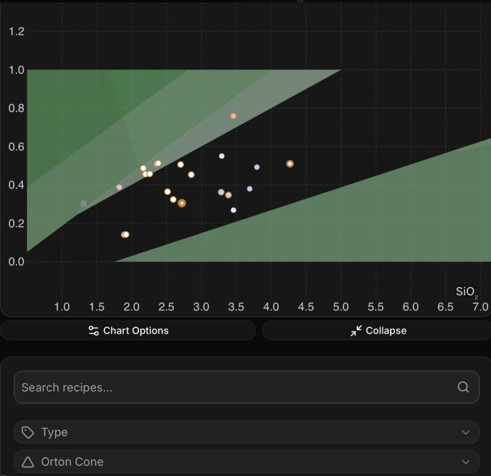
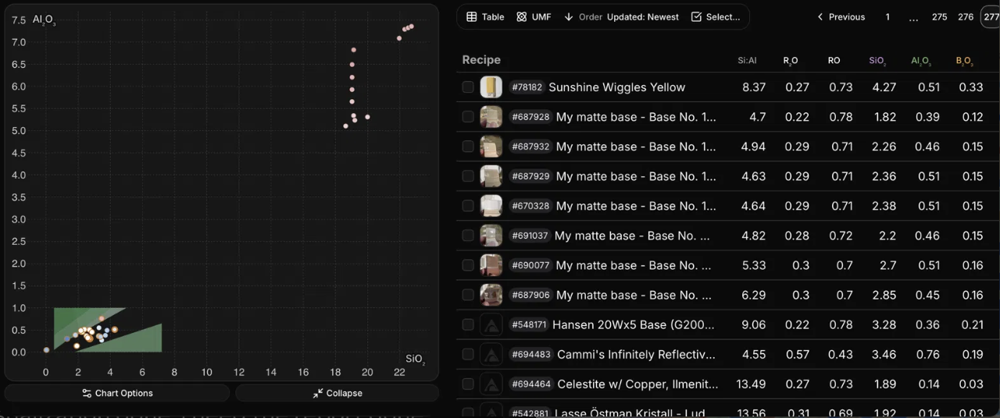
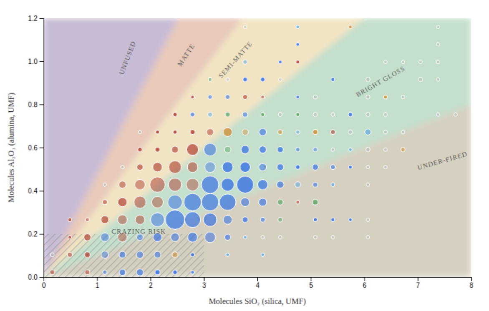

A glaze recipe is a list of raw materials, but what melts in the kiln is the chemistry those materials add up to. The standard way to write that chemistry is the Unity Molecular Formula (UMF), which scales every recipe so its melter oxides sum to one, making any two recipes directly comparable. A Stull chart plots two of those oxides against each other: silica (SiO2), the glass itself, across the bottom, and alumina (Al2O3), which stiffens the melt so it does not run off the pot, up the side.
R.T. Stull fired hundreds of test tiles in 1912 and mapped which chemistries came out glossy, matte, underfired or crazed. Those mapped zones are the shaded regions behind the points, and they fan out from the origin because what actually governs the surface is not silica or alumina alone but the ratio between them — and a fixed ratio is a straight line from the origin.
After first trying to scrape Glazy, I found the data is already the official public export of the Glazy database, published by Glazy's creator and licensed CC BY-NC-SA 4.0. Of 12,892 glaze recipes, 12,365 remain after removing entries with no usable analysis, chemistries outside the chart's domain, and exact duplicates. Each row carries the recipe name, its silica and alumina in UMF, the computed silica:alumina ratio, Orton cone, surface type, category and a link back to the recipe on Glazy. Two further files hold the region polygons and the limit-formula rectangles; neither is acquired data, both are hardcoded from published sources.
Every mark is real glaze recipes from the Glazy database, placed by chemistry. Clusters are sized by how many recipes they hold — click one to zoom in and separate the recipes inside it.
A glaze recipe is a list of raw materials, but what actually melts in the kiln is the chemistry those materials add up to. The standard way to write that chemistry is the Unity Molecular Formula, or UMF, which scales everything so the melter oxides add up to exactly 1. That makes any two recipes directly comparable.
Silica (SiO2), across the bottom, is the glass itself. Alumina (Al2O3), up the side, stiffens the melt and stops it running off the pot. A glaze with 3.0 silica and 0.4 alumina sits at (3.0, 0.4).
Stull fired hundreds of test tiles in 1912 and mapped which chemistries came out glossy and which came out dry. The bands are his answer. They fan out from the bottom-left corner because what actually matters is not silica or alumina alone but the ratio between them — and a fixed ratio is a straight line from the origin.
Roughly: below about 5 parts silica to 1 part alumina you get matte surfaces; above about 10:1 there is more silica than the heat can melt, so the glaze comes out under-fired. In between is the glossy zone.
Turn on Ratio lines and you can read a recipe's ratio straight off the chart by seeing which radial it sits nearest, instead of dividing in your head. Moving a glaze along a ratio line makes it stiffer or runnier without changing its surface much; moving it across the lines changes the surface. That is the single most useful thing the chart can tell you, and it is the reason the ratio lines are here.
Different authors published their own "stay inside this box" recommendations for reliable glazes. They are one authority's opinion, not physical law, and they disagree with each other — which is exactly why they are off by default and why you can only show one at a time.
The bands are cone 11 only. Stull fired his tests at cone 11 with a particular flux balance, and those are the boundaries drawn here. They do not move when you change the cone filter, even though in reality the boundaries shift with temperature. Compare the mattes at cone 10 with the mattes at cone 04 and you can see the mismatch for yourself.
The vertical scale is exaggerated about four times. Silica runs 0–8 across a wide box while alumina runs 0–1.2 up a short one, so every slope you see is steeper than the true slope. Ratios are still comparable within this chart, because the stretch is the same everywhere — but do not compare an angle here against an angle on a square plot.
Crazing is not really a region. It depends on the clay body underneath as much as on the glaze, so no chart can guarantee it. Treat all of these bands as a sketch of the territory, not a promise.
| Recipe | SiO2 | Al2O3 | Ratio | Cone | Surface |
|---|
Glazy.org's recipe browser is a coordinated dashboard: a Stull chart plotting each glaze by silica against alumina, a filter panel, and a paginated table, drawn from roughly 12,800 public recipes with calculated Unity Molecular Formulas. Its message is that a glaze's fired surface is largely predictable from where its chemistry sits. The audience is practicing potters, mostly self-taught. Four tasks follow of locating a recipe, predicting its surface, navigating (decide which way to move a recipe), and judging whether it can be trusted on functional ware.
Strength 1: the position encoding fits the variable. The subject is not silica or alumina alone but the ratio between them, and a fixed ratio is a line from the origin — so position makes ratio readable as direction, the most accurate perceptual channel I found (Munzner).
Strength 2: the filtering options and coordinated views Filters help users find and tailor to what they're specifically looking for. And they drive the chart and table together. I also liked that hovering a row marks the corresponding point, so lookup and overview share one interface really.
Weakness 1: the axes rescale to outliers. In Figure 2 they run to 22 and 7.5 because a few recipes carry broken analyses. Across the database 96.45% of recipes fall inside the plate's bounds of 7.2 by 1.0; the other 3.55% stretch the frame until the diagram occupies about 4% of it. Compressing one axis far more than the other makes the central task fail silently and makes it hard to navigate so many clustered points in a small area.
Weakness 2: the chart plots only the current table page — there are 495 pages at 25 recipes each. Paginating I think aimed to control overplotting all the points on one chart, but Figure 1 shows marks still colliding at twenty points, so the cost is paid without the benefit. It also trades the synoptic task of comparison for the elementary task of lookup (Duncan et al.): a viewer cannot see how glazes are distributed or whether their own is unusual.
Weakness 3: color misleads not once but twice The regions are filled with shades of one green. Saturation is a magnitude channel, so varying them implies an ordering when the regions are nominal and also unlabelled. Separately, the marks are colored with no legend. It appears to be each recipe's photographed color, which is not reliable, ineffective, and confusing for an initial viewer.
1. A fixed, clipped domain. The redesign plots 0–8 silica against 0–1.2 alumina in a fixed pixel frame that never rescales, because a chart reflowing with the window would silently change every slope. This addresses Weakness 1. Radials at 5:1, 7.5:1 and 12:1 then make ratio readable without mental division.
2. Aggregate Every filtered recipe is binned into clusters sized by count. If a user clicks one, it zooms in and separates the recipes inside, and the table follows along. This addresses Weakness 2, doing properly what pagination attempted. So overplotting goes while the entire population stays on screen, so distribution and outliers become visible and lookup stays one click away. This could've also been done with lowering the opacity of the marks, but showing them all at once in the whole chart was still too cluttered and overwhelming.
3. Re-encoding color. Regions take distinct hues with their names written inside them and I made marks have an explicit surface legend. This addresses Weakness 3 where hue is categorical and luminance is not, so the false ordering disappears and every region can be named clearly.
4. Toggleable limit rectangles. Published glaze limits — Green & Cooper, Roy/Hesselberth, Cushing — mark the chemistry ranges each author considers dependable. Overlaying one turns the chart from a melting prediction into practical guidance: a potter, especially a self-taught one, sees not just whether a glaze will fuse but whether it sits where an authority would trust it on functional ware. This serves the judge task, which the original leaves unsupported. Only one shows at a time, since displaying them together would recreate the confusion they exist to resolve.
Locating is easier through larger marks and a stable frame; comparison becomes possible at all; predicting no longer means guessing which green is which; and the limit overlays make judging viability possible.
What the redesign cannot do is make the chart certain. Glaze chemistry is not deterministic: boundaries move with cone, cooling, clay body and thickness. So uncertainty is built into the encoding rather than footnoted, I softened the region edges, unverified rectangles are drawn dashed. The regions remain Stull's cone 11 boundaries and do not shift with the cone filter, since per-cone coordinates could not be sourced; the polygons were read off printed label positions. I learned that a chart can be well-made and help orient a potter, but not promise a result since inherently ceramics can be a bit unpredictable and based on many factors.

Sources for the visualization, the data, the region polygons, the limit formulas and the visualization principles cited are listed under Data source and references in Part 1.